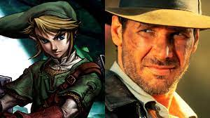
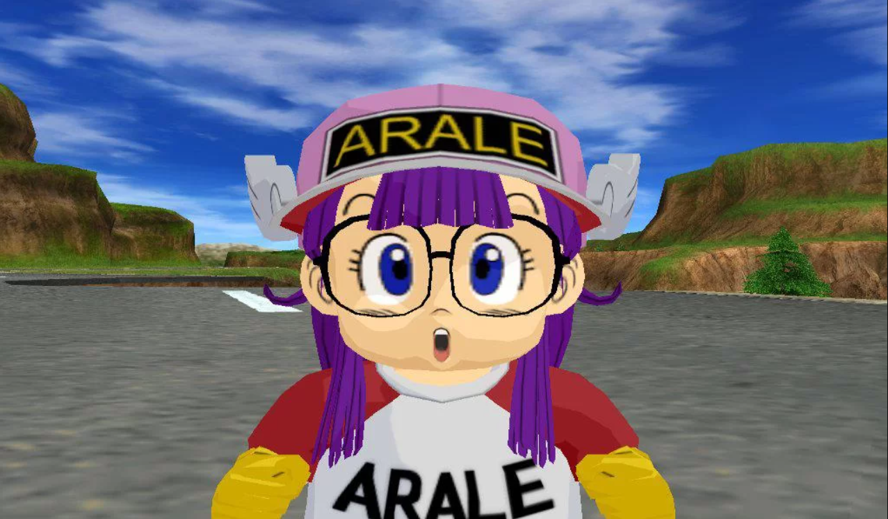

Muito jogos que nos jogamos sempre tem algum segredo ou nos arquivos, ou mesmo no próprio desenvolvimento. Nesse blog vou apresentar algumas curiosidades de alguns jogo, que você provavelmente já jogou ou vai jogar.
Sumario
Pokemon
Foram criados mais de 300 Pokémon para os primeiros jogos

Como sabemos, muitos pokemons acabam ficando de fora do jogos da franquia, especialmente quando se considera as restrições de espaço dos cartuchos antigos. Em uma entrevista Ken Sugimori afirmou que foram criadas cerca de 300 criaturas foram feitas no desenvolvimento de Pokémon Red & Green, algumas foram transportadas para a sequência Pokémon Gold & Silver, mas algumas foram simplesmente cortadas (ou adaptadas). No Project N duas matérias foram produzidas falando especificamente dos monstrinhos cortados das primeiras gerações de Pokémon, se você está afim de saber mais sobre esse detalhe interessante da história da franquia clique aqui: Parte 1 e Parte 2
The Legend of Zelda
Para criar Zelda, os desenvolvedores se inspiraram em Indiana Jones
Em uma entrevista, Shigeru Miyamoto falou sobre o processo de criação de The Legend of Zelda e citou os filmes protagonizados pelo arqueólogo Indiana Jones como uma grande inspiração. Sua declaração foi: “os filmes Indiana Jones também saíram por volta dessa época. Eu queria recriar esse tipo de aventura em um jogo e as pessoas que jogavam RPG na época estavam sempre se gabando da força dos seus personagens e telefonando umas para as outras para trocarem esse tipo de informações. Com um mundo de espadas e magia como tema, decidi criar um jogo de aventura baseado numa caça ao tesouro. E assim surgiu The Legend of Zelda”.
Dragon Ball Z: Budokai Tenkaichi 3
Personagem fraco com uma utilidade muito útil
Dragon Ball Z: Budokai Tenkaichi 3 traz uma lista extensa de personagens, e um desses nomes é o de Arele Norimaki. Protagonista da série Dr. Slump, que também foi criada por Akira Toriyama, ela aparece como uma personagem menor em Dragon Ball e, consequentemente, no game. Arale pode ser caracterizada como uma personagem gag, ou seja, que raramente é utilizada e não vai muito além do suporte para o protagonista ou outros nomes de uma obra. Entretanto, vez ou outra, esses personagens podem surpreender — como neste caso! Dragon Ball Z: Budokai Tenkaichi 3 tem alguns inimigos que não são atingidos normalmente por muitos personagens, como Broly. Porém, Arele aparentemente não segue essa regra e pode atingir qualquer adversário que apareça em seu caminho.
Super Mario 64
Luigi foi removido de Super Mario 64 por causa de problemas de memória
Em uma entrevista, Miyamoto destacou que o personagem permaneceu dentro do game até quase o lançamento do game. Porém, Luigi precisou ser removido de Super Mario 64 por causa da quantidade de memória do console. O Vídeo VHS em questão dura apenas 2 segundos, extraído da apresentação Space World Show de 1995, quando a Nintendo apresentou ao público o Nintendo 64 pela primeira vez. Nas imagens, é possível ver claramente Luigi em uma das telas, enquanto Mario aparece na outra.
We finally have a glimpse of what the early multiplayer mode for Super Mario 64 looked like! This is also the first time we have seen Luigi's SM64 model outside of the Nintendo Leaks! Take a look! pic.twitter.com/Ev3R7NDBtp
— Marionova (@Marionova64) December 15, 2023
Minecraft
Os creepers nasceram como um erro
O processo de criação dos creepers, um dos monstros nativos de Minecraft, começou com a tentativa de fazer um porco, mas o desenvolvedor do game trocou altura por comprimento ao inserir o código. “Eu não tenho um modelo de programação, então apenas escrevo os códigos e acidentalmente os fiz altos ao invés de longos, e ficou aquela coisa alta com quatro pequenas patinhas”, disse Notch no documentário “Minecraft: A História da Mojang”, de 2012. Os creepers chegam silenciosamente para destruir as construções, mas têm medo dos ocelotes (uma espécie de gato).